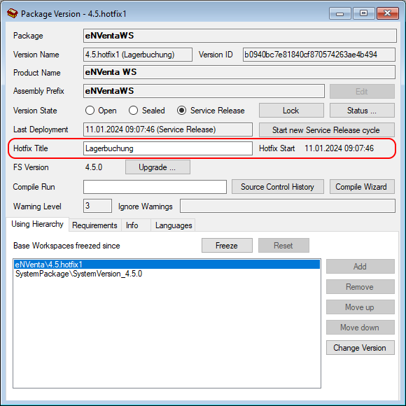

Hotfix-Branch
Mit Hilfe von Hotfix-Branches ist es möglich, parallel zum laufenden Service-Release Änderungen vorzunehmen und diese kurzfristig auszuliefern.
Normalerweise werden im Laufe eines Service-Release-Zyklus mehrere Änderungen eingecheckt, die am Ende des Zyklus vor der Auslieferung getestet werden. Treten schwerwiegende Programmfehler auf, kann eine Korrektur ggf. nicht bis zur nächsten regulären Auslieferung warten. Es muss sehr zeitnah korrigiert und ausgeliefert werden. Eine Auslieferung des Entwicklungsstands birgt aber mitunter ein sehr großes Risiko, weil 1. viele weitere und 2. ungetestete Änderungen enthalten sein können. Weitere Probleme sind dann sehr wahrscheinlich.

Für diesen Zweck kann im Quell-Repository für eine Package-Version ein Hotfix-Branch abgezweigt werden. Der Hotfix-Branch ist eine eigene, von der Hauptversion losgelöste, parallel existierende Version.
Note
Alle Änderungen im Hotfix-Branch müssen deshalb parallel in der Hauptversion nachgezogen werden. Ein "Merge" zurück in die Hauptversion ist nicht möglich.
Der Hotfix-Branch kann zum Zeitpunkt der letzten Auslieferung abgezweigt werden. Anschließend wird die gewünschte Korrektur durchgeführt. So ist sichergestellt, dass nur der getestete Stand und ausschließlich diese Korrekturen enthalten sind.
Beim Export der Package-Version gibt sich der Hotfix-Branch als Service-Release-Stand der Hauptversion aus. Nach einem Import ins Ziel-Repository müssen deshalb keine Versionen umgehängt werden und es greifen auch alle anderen beim Service-Release üblichen Optimierungen.
Die Abbildung oben skizziert verschiedene Szenarien für einen Hotfix-Branch:
- Die Änderung wird zuerst im Hotfix-Branch (4.5.hotfix1) durchgeführt. Das muss zeitnah im Haupt-Branch (4.5) nachgezogen werden, damit die Änderung im nächsten Service-Release enthalten ist.
- Eine Änderung im Haupt-Branch (4.5) kann nicht bis zur Auslieferung des Service-Release warten. Sie wird im Hotfix-Branch (4.5.hotfix2) nachgezogen.
- Unmittelbar vor der Auslieferung findet eine Korrektur im Hotfix-Branch (4.5.hotfix2) statt. Wenn diese Korrektur einen Hotfix rechtfertigt, sollte die Auslieferung verzögert und die Korrektur sofort nachgezogen werden. Ist das absolut keine Option, dann muss die Korrektur nach der Auslieferung nachgezogen werden. In diesem Fall muss ggf. unmittelbar nach der Auslieferung ein neuer Hotfix-Branch (4.5.hotfix3) erstellt und der Zeitpunkt so gewählt werden dass die entscheidende Korrektur gerade noch so enthalten ist. ...
- ... Ist das nicht möglich, weil es schon andere Änderungen vor dieser Korrektur gibt, muss, wie im 1. Szenario, der Hotfix-Branch (4.5.hotfix3) regulär erstellt und die Korrektur erneut nachgezogen werden.
Allgemeine Regeln
- Verschiedene Hotfix-Auslieferungen eines Packages sind nicht miteinander kombinierbar!
- Es sollten nicht mehrere Hotfix-Branches gleichzeitig parallel betrieben werden (z.B. 4.5.hotfix1 + 4.5.hotfix2).
- Der Hotfix sollte ausschließlich für Notfälle verwendet werden. Werden im Hotfix-Branch zu viele Korrekturen durchgeführt, gefährdet das die Möglichkeit, jederzeit kurzfristig ausliefern zu können und es erzeugt zudem signifikante Mehrarbeit.
Im Entwicklungs-Repository
Um einen neuen Hotfix-Branch zu eröffnen, wählen Sie im Package Manager zuerst die entsprechende Hauptversion aus. Diese Version muss sich im Service-Release-Modus befinden und es darf kein anderer Hotfix-Branch sein.
Drücken Sie dann den Button  (Open Hotfix Branch). Es erscheint eine Versions-Historie, in der der Zeitpunkt des Abzweigs ausgewählt werden kann.
(Open Hotfix Branch). Es erscheint eine Versions-Historie, in der der Zeitpunkt des Abzweigs ausgewählt werden kann.

Zusätzlich zu den Check-Ins zeigt die Historie auch die Zeitpunkte für den Start des Service-Release und die letzte Service-Release-Auslieferung an. Normalerweise sollte einer dieser Zeitpunkte ausgewält werden, damit die Hotfix-Korrektur zum letzten Auslieferungs-Stand passt und keine weiteren Änderungen den Hotfix stören.
Soll jedoch ein bestimmter Check-In explizit enthalten sein, dann kann auch dieser ausgewählt werden. Dabei ist jedoch zu beachten, dass damit auch alles, was davor eingecheckt wurde, im Hotfix-Branch landet.
Nach dem Klick auf das gewünschte Datum wird der Hotfix-Branch angelegt.

Der Version Name wird automatisch vergeben und nummeriert. Er lautet z.B. "4.5.hotfix1", "4.5.hotfix2" usw.
Der Hotfix-Branch übernimmt den Service-Release-Modus. Es ist nicht möglich, den Version State auf Open zu setzen.
Im Hotfix Title kann eine sprechender Titel angegeben werden. Dieser wird z.B. im Login-Dialog anzeigt. Wird kein Titel definiert, dann wird alternativ das Hotfix Start Datum verwendet.
Nachdem der Hotfix-Branch erzeugt wurde muss ein Compile-Wizard ausgeführt werden. Weil der Abzweig zu einem beliebigen Zeitpunkt der Vergangenheit erfolgt, gibt es keinen Workspace, auf dem der Branch aufsetzen kann. Aus diesem Grund muss zuerst ein Compile ausgeführt werden, damit ein entsprechender Workspace frisch aufgebaut wird.
Anschließend kann sich ein normaler Benutzer mit der IDE am Hotfix-Branch anmelden.
Die Hotfix-Branches werden im Login-Dialog angeboten:

Ab jetzt greift der ganz normale Entwicklungs- und Auslieferungs-Workflow:
- Änderungen durchführen
- Einchecken
- Compile-Wizard ausführen
- Export der Package-Version für die Auslieferung
Customizing-Packages
Soll im Quell-Repository ein Hotfix-Branch (z.B. eNVenta 4.5.hotfix2) in einem Customizing-Package (z.B. eNVentaWS 4.5) verwendent werden, dann muss im Customizing ebenfalls ein Hotfix-Branch (z.B. eNVentaWS 4.5.hotfix2) erstellt werden. In der Using-Hierarchy kann dann die Version des Basis-Packages auf den Hotfix-Branch geändert werden.
Im Ziel-Repository
Ein Hotfix beinhaltet immer ein komplettes Package (.db-Datei). Es kann, wie jedes andere komplette Package, jederzeit - auch nach einem Service-Release - importiert werden.
Über einen Hotfix-Stand kann kein weiteres Service-Release-Package (.srdb-Datei) importiert werden. Um wieder zum normalen SR-Rythmus zurück zu wechseln, müssen Sie folgende Schritte druchführen:
- Import des ursprünglichen Release-Packages - z.B.
2023-01-02_eNVenta_4.5.db(vgl. Abb. oben) - Import des gewünschten Service-Release-Packages - z.B.
2023-02-01_eNVenta_4.5.srdb